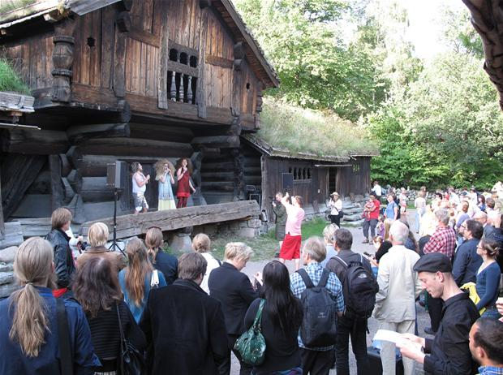
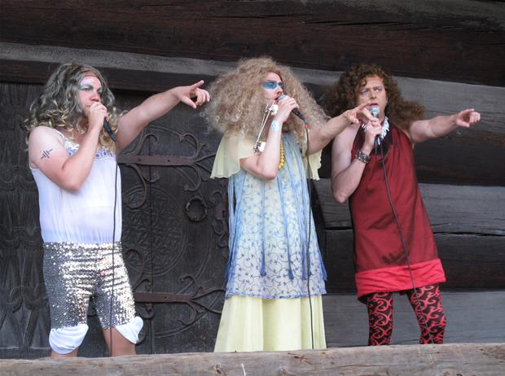
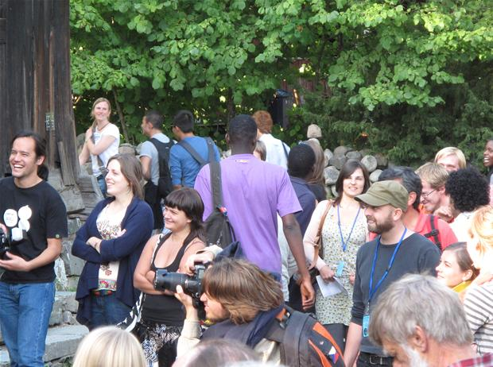

Postkort fra Oslo, Danmarks Radio P2 |
| Festivalen Happy Nordic Music Days rykkede ud på Det Norske Folkemuseum. Her tog færøske transvestitter plads under halvtaget på en bjælkehytte. Se de fantastiske billeder! Foto: Max Fage-Pedersen. |


